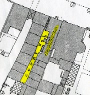

|
c1855 Map of All Saints Ward, Derby, Derbyshire
Derby is the county town of Derbyshire, a municipal and parliamentary borough and market
town, comprising the parishes of St. Alkmund's, St. Peter's, St. Michael's, All Saints, and
St. Werburgh's, in the county of Derby. It is pleasantly situated amid the beautiful
scenery of the vale of the river Derwent, 132 miles NNW of London by railway, and 126 miles
by road. It was a principal station on the Midland Counties railway, which connected it
with Nottingham and Lincoln, Leicester and London, Birmingham, Bristol, Exeter, Sheffield,
Leeds, York, Newcastle, and Edinburgh.

Greyhound Yard
Derby, c1855
|
Derby had considerable manufacturers, the most important being those of silk, cotton,
calico, lace, porcelain, china, and Derbyshire or "fluor" spar. The black marble found
in Derbyshire was extensively wrought into vases and chimney-pieces. The first
silk-mill ever erected in England was built in Derby on a swampy island in the Derwent
in 1718, successfully introducing the art of "silk throwing" into England from Italy.
The manufacture of cotton was introduced at a later period, and was not as extensive as
that of silk. The manufacture of porcelain, which was then equal to the best foreign
porcelain, was originally established about 1750. In addition, there were manufacturers
of paper, white and red lead and jewellery.
The streets of Derby in the old part were narrow. The town was lighted with gas, and
supplied with water from the Derwent. The buildings were handsome; the town hall was
built in 1828, and was destroyed by fire in 1841; the outer and centre walls were,
however, preserved, and later formed a portion of the new building. The county-hall
was a heavy freestone building, erected in 1660. The railway station was one of the
most extensive in England, the length of buildings and covered platform being no less
than 1,050 feet. In addition, there were the county gaol assembly room, theatre, Derby
and Derbyshire Joint Stock bank, savings-bank, race-stand, and county lunatic asylum.
The Arboretum, presented in 1840, was a piece of ground of about 15 acres, laid out in
walks and planted with trees and shrubs. The general market was held on Friday, one
for the sale of meat and provisions on Saturday evening and cattle markets were held on
Tuesday and Friday. There were several fairs throughout the year.
|